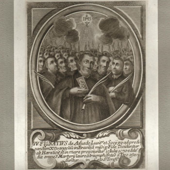

Isusovački blaženici
Redovnički brat · Mučenik
Bl. Stjepan Zuraire
Španjolski isusovački brat zaputio se u Brazil s ocem Azevedom. Prije dolaska u misije ubijen je sa subraćom tijekom napada na njihov brod.
Tekst je preveden i prilagođen uz pomoć umjetne inteligencije.

Izvor slike
- Spomendan
- 15. srpnja
- Zaštitništvo
- Nije navedeno u izvoru
- Djelovanje
- Misije i evangelizacija · Mučeništvo
- Razdoblje
- 16. stoljeće
- Podaci o razdoblju
- Godina rođenja nije pouzdano dokumentirana. Filtriranje obuhvaća dokazani život, a mogući raniji početak nije utvrđen.
- Podrijetlo
- Španjolska
- Datum smrti
- 15. srpnja 1570.
U kalendaru zbirke koristi se dan smrti. Taj datum nije zasebna potvrda liturgijskoga spomendana.
Životopis
Esteban Zuraire bio je španjolski isusovački brat koji se priključio misiji Ignacija de Azeveda za Brazil. U starom portugalskom životopisu pojavljuje se kao Estevão Zurara. Taj prikaz bilježi njegovu povezanost s baskijskim krajem i praktičan zanat vezenja i ukrašavanja tkanina.
U kolegiju u Plasenciji bio je zadužen za odjeću i rubeninu. Takve su službe bile dio svakodnevnoga života redovničke zajednice: pripremanje i čuvanje odjeće omogućavalo je i nastavu i pastoralni rad subraće. Na dalekom putovanju ista su znanja imala vrijednost za opremanje nove misije.
Zajednička priprava skupine. Franco opisuje kako su članovi Azevedove misije prije polaska izrađivali odjeću, liturgijsko ruho i druge potrepštine. Taj se opis odnosi na skupinu; ne tvrdi se da je svaki sačuvani predmet izradio upravo Zuraire.
Pri napadu gusara bio je među članovima skupine određenima da hrabre ljude koji su branili brod i pomažu u borbi zahvaćenoj posadi. Napadači su ga živa bacili u more. Nije stigao do Brazila, ali njegovo ime ostaje povezano s misijom za koju se pripremao i s mučeništvom četrdesetorice kod Kanarskih otoka 1570.
Tekst je preveden i prilagođen uz pomoć umjetne inteligencije.
Pročitaj više na izvornoj stranici ↗